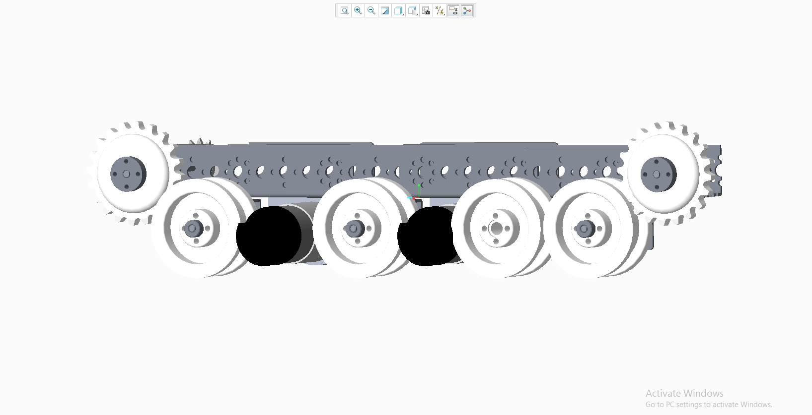
 I also came up with a way to connect both halves of the robot for when we build the left side of our tank drive, and modelled what that would look like when complete.
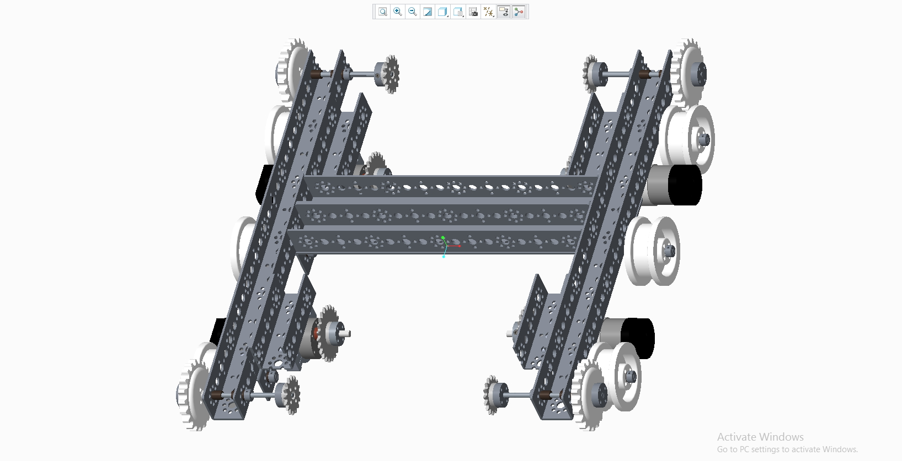
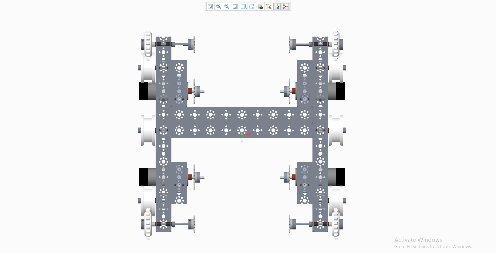
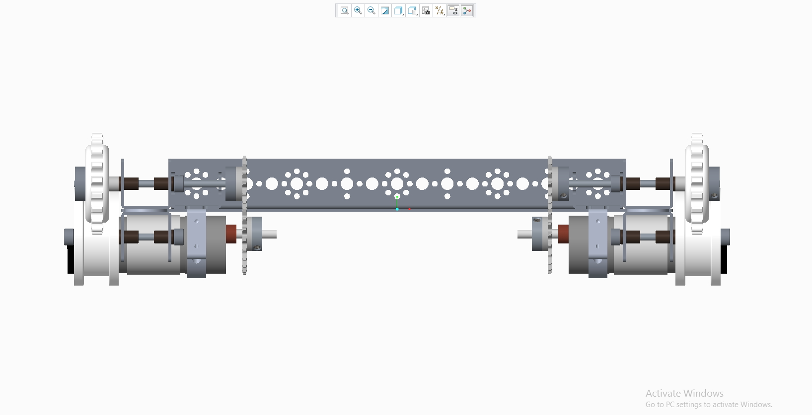
I also came up with a way to connect both halves of the robot for when we build the left side of our tank drive, and modelled what that would look like when complete.
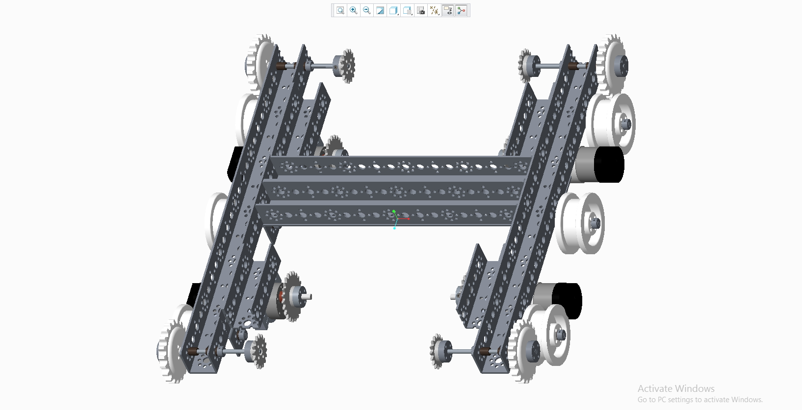
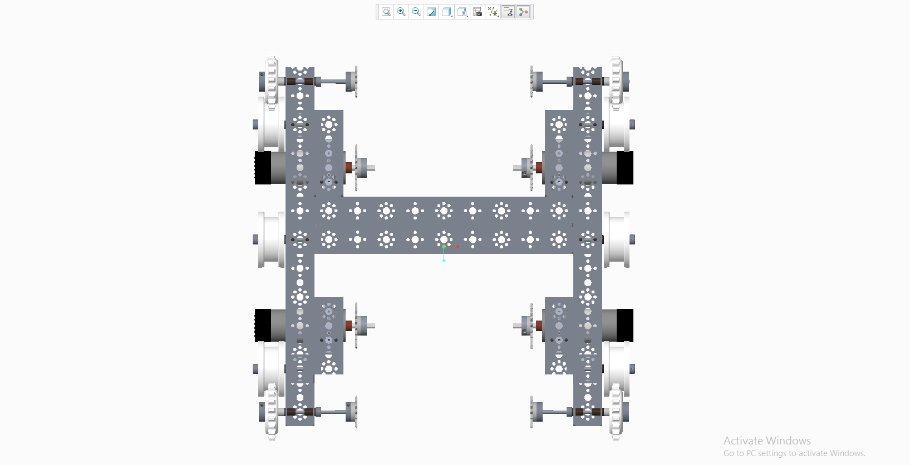
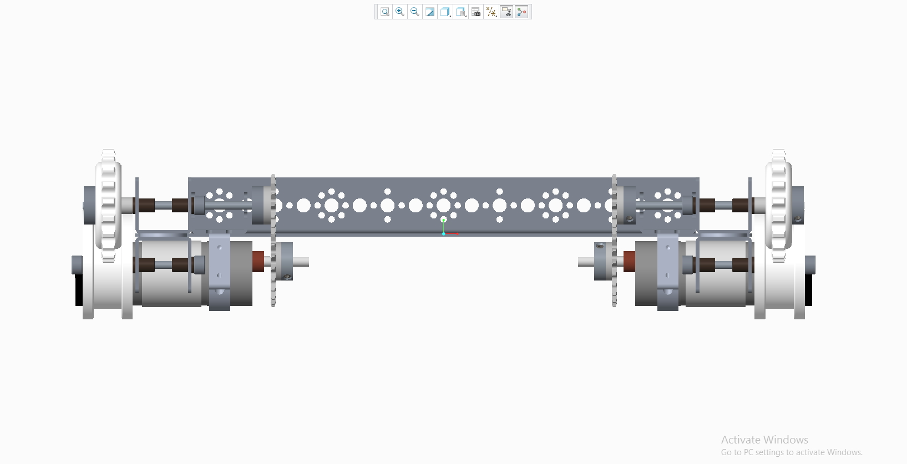
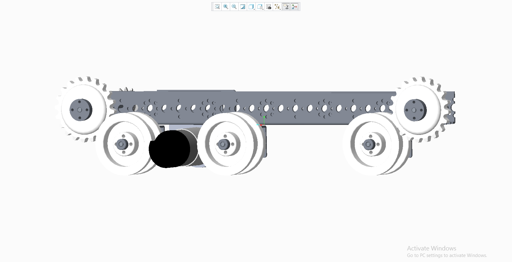 Since the robot game for this year came out about a week ago, we were thinking about which kind of drive system would work best for the challenge, which mostly involves climbing. Some of the concept we came up with were rocker bogies, rubber-banded tires and a tank drive with treads. Since we already had the preliminary design started for a tank drive, I started modeling that.
Throughout the early build of the tank drive's right nacelle, I used Creo to assist in the design of the robot, using the software to see how parts could fit together, and how they couldn't. For example, we were hoping
to add an extra idler wheel into the tank drive between the motors, I found out through Creo that there was just barely not enough space to fit it.
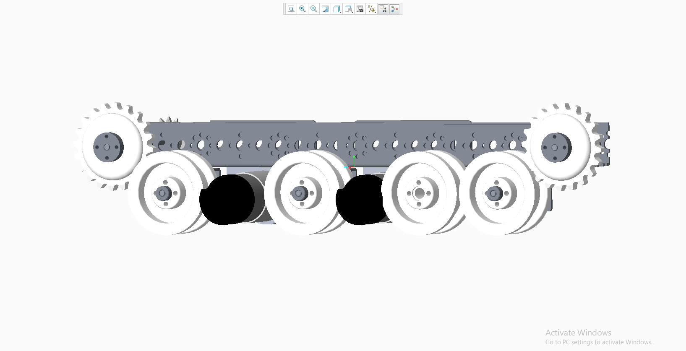
I also came up with a way to connect both halves of the robot for when we build the left side of our tank drive, and modelled what that would look like when complete.
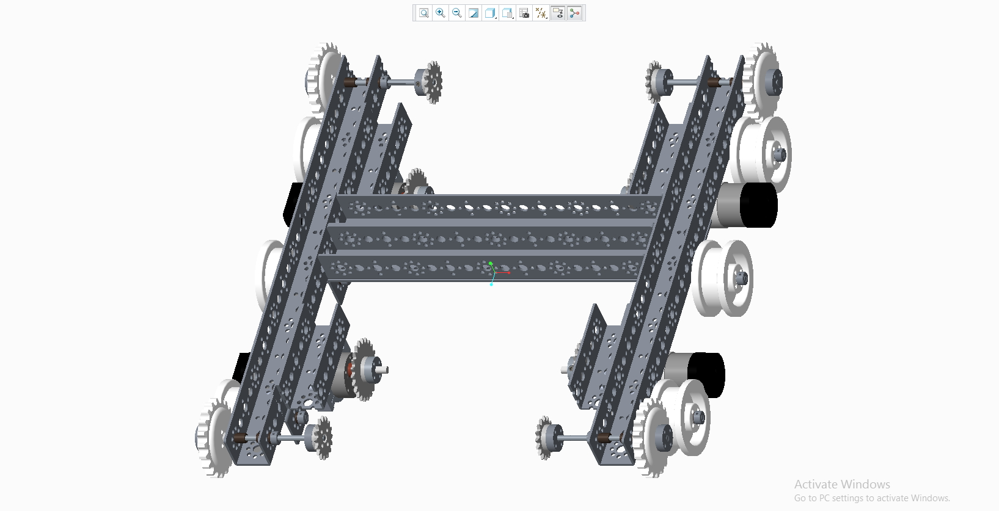
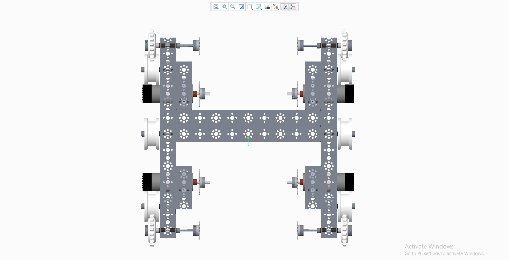
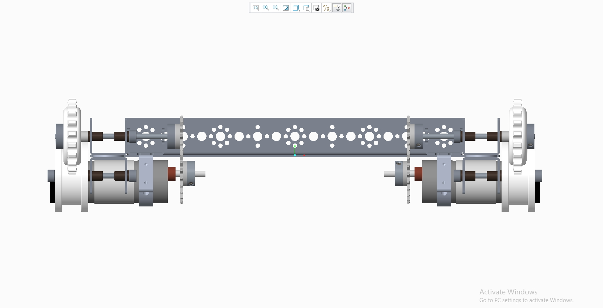